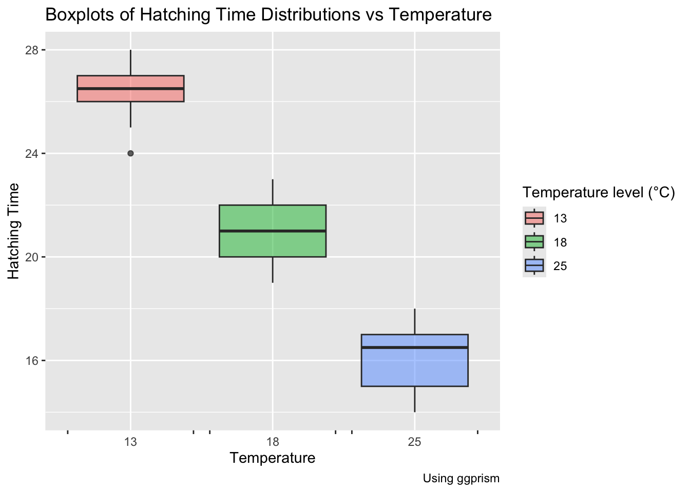

This module focuses on comparing data collected from the same set of individual categories. And in this case, we treat this data as paired since they correspond to the same set of observable entities.
For working with this type of data, we would use the difference between the means of the two sets.
Setting up the packages:
library(tidyverse)
── Attaching core tidyverse packages ──────────────────────── tidyverse 2.0.0 ──
✔ dplyr 1.1.4 ✔ readr 2.1.5
✔ forcats 1.0.0 ✔ stringr 1.5.1
✔ ggplot2 3.5.1 ✔ tibble 3.2.1
✔ lubridate 1.9.3 ✔ tidyr 1.3.1
✔ purrr 1.0.2
── Conflicts ────────────────────────────────────────── tidyverse_conflicts() ──
✖ dplyr::filter() masks stats::filter()
✖ dplyr::lag() masks stats::lag()
ℹ Use the conflicted package (<http://conflicted.r-lib.org/>) to force all conflicts to become errors
library(ggformula)
Loading required package: scales
Attaching package: 'scales'
The following object is masked from 'package:purrr':
discard
The following object is masked from 'package:readr':
col_factor
Loading required package: ggridges
New to ggformula? Try the tutorials:
learnr::run_tutorial("introduction", package = "ggformula")
learnr::run_tutorial("refining", package = "ggformula")
library(mosaic)
Registered S3 method overwritten by 'mosaic':
method from
fortify.SpatialPolygonsDataFrame ggplot2
The 'mosaic' package masks several functions from core packages in order to add
additional features. The original behavior of these functions should not be affected by this.
Attaching package: 'mosaic'
The following object is masked from 'package:Matrix':
mean
The following object is masked from 'package:scales':
rescale
The following objects are masked from 'package:dplyr':
count, do, tally
The following object is masked from 'package:purrr':
cross
The following object is masked from 'package:ggplot2':
stat
The following objects are masked from 'package:stats':
binom.test, cor, cor.test, cov, fivenum, IQR, median, prop.test,
quantile, sd, t.test, var
The following objects are masked from 'package:base':
max, mean, min, prod, range, sample, sum
library(broom) # Tidy Test datalibrary(resampledata3) # Datasets from Chihara and Hesterberg's book
Attaching package: 'resampledata3'
The following object is masked from 'package:datasets':
Titanic
library(gt)library(patchwork) # Arranging Plotslibrary(ggprism) # Interesting Categorical Axeslibrary(supernova)# for tables
Attaching package: 'supernova'
The following object is masked from 'package:scales':
number
Name Country Semifinal Final
1 CHEONG Jun Hoong Malaysia 325.50 397.50
2 SI Yajie China 382.80 396.00
3 REN Qian China 367.50 391.95
4 KIM Mi Rae North Korea 346.00 385.55
5 WU Melissa Australia 318.70 370.20
6 KIM Kuk Hyang North Korea 360.85 360.00
7 ITAHASHI Minami Japan 313.70 357.85
8 BENFEITO Meaghan Canada 355.15 331.40
9 PAMG Pandelela Malaysia 322.75 322.40
10 CHAMANDY Olivia Canada 320.55 307.15
11 PARRATTO Jessica USA 322.75 302.35
12 MURILLO URREA Carolina Colombia 325.75 283.35
# A tibble: 2 × 6
name class levels n missing distribution
<chr> <chr> <int> <int> <int> <chr>
1 Name factor 12 12 0 " SI Yajie (8.3%) ... …
2 Country factor 8 12 0 "Canada (16.7%), China (16.7%) ... …
Diving2017_inspect$quantitative
# A tibble: 2 × 11
name class min Q1 median Q3 max mean sd n missing
* <chr> <chr> <dbl> <dbl> <dbl> <dbl> <dbl> <dbl> <dbl> <int> <int>
1 Semifinal numeric 314. 322. 326. 357. 383. 338. 22.9 12 0
2 Final numeric 283. 319. 359. 387. 398. 350. 40.0 12 0
# A tibble: 24 × 4
Name Country race scores
<fct> <fct> <chr> <dbl>
1 "CHEONG Jun Hoong" Malaysia Final 398.
2 "CHEONG Jun Hoong" Malaysia Semifinal 326.
3 " SI Yajie" China Final 396
4 " SI Yajie" China Semifinal 383.
5 "REN Qian" China Final 392.
6 "REN Qian" China Semifinal 368.
7 "KIM Mi Rae" North Korea Final 386.
8 "KIM Mi Rae" North Korea Semifinal 346
9 "WU Melissa" Australia Final 370.
10 "WU Melissa" Australia Semifinal 319.
# ℹ 14 more rows
Diving2017_long %>%gf_col(fct_reorder(Name, scores) ~ scores, #decreasing order of scores -> code is wrong(not ordered in decreasing order because of the long form of data set)fill =~race,alpha =0.5,position ="dodge",xlab ="Scores",ylab ="Name",title ="Diving Scores" )
We can see that, the data is not normally distributed (not Gaussian).
Even though the medians appear to be different, but since the box plots overlap, we cannot conclude that the means of the two race timings are different.
Check for Normality
shapiro.wilk test checks whether a quant variable is from a normal distribution.
Our Null Hypothesis is that the data is from a normal distribution.
shapiro.test(Diving2017$Final)
Shapiro-Wilk normality test
data: Diving2017$Final
W = 0.9184, p-value = 0.273
shapiro.test(Diving2017$Semifinal)
Shapiro-Wilk normality test
data: Diving2017$Semifinal
W = 0.86554, p-value = 0.05738
If p value is very small, it is not a normal distribution.
If p value is large, it is a normal distribution.
Hypothesis
Semi final mean = Final mean
Semi final mean not = Final mean
Observed and Test Statistic
obs_diff_swim <-diffmean(scores ~ race,data = Diving2017_long,only.2 =FALSE) # paired data# Can use this also# formula method is better for permutation test!# obs_diff_swim <- mean(~ (Final - Semifinal), data = Diving2017)obs_diff_swim
diffmean
-11.975
diffmean: Splits the score column into semifinal and final and get the difference in mean.
only.2: take the data paired wise and not at random
Rows: 60 Columns: 4
── Column specification ────────────────────────────────────────────────────────
Delimiter: ","
dbl (4): Frogspawn sample id, Temperature13, Temperature18, Temperature25
ℹ Use `spec()` to retrieve the full column specification for this data.
ℹ Specify the column types or set `show_col_types = FALSE` to quiet this message.
frogs_orig
# A tibble: 60 × 4
`Frogspawn sample id` Temperature13 Temperature18 Temperature25
<dbl> <dbl> <dbl> <dbl>
1 1 24 NA NA
2 2 NA 21 NA
3 3 NA NA 18
4 4 26 NA NA
5 5 NA 22 NA
6 6 NA NA 14
7 7 27 NA NA
8 8 NA 22 NA
9 9 NA NA 15
10 10 27 NA NA
# ℹ 50 more rows
What is the research question?
Based on the sample dataset at hand, how does frogspawn hatching time vary with different temperature settings?
Response Variable: Hatching time
Explanatory Variable : Temperatures
Clean the data
frogs_orig %>%pivot_longer( .,cols =starts_with("Temperature"),cols_vary ="fastest",# new in pivot_longernames_to ="Temp",values_to ="Time" ) %>%drop_na() %>%##separate_wider_regex(cols = Temp,# knock off the unnecessary "Temperature" word# Just keep the digits thereafterpatterns =c("Temperature", TempFac ="\\d+"),cols_remove =TRUE ) %>%# Convert Temp into TempFac, a 3-level factormutate(TempFac =factor(x = TempFac,levels =c(13, 18, 25),labels =c("13", "18", "25") )) %>%rename("Id"=`Frogspawn sample id`) -> frogs_longfrogs_long
# A tibble: 3 × 2
TempFac n
<fct> <int>
1 13 20
2 18 20
3 25 20
There are some columns with NA, since not all spawns (in each dish) can be subjected to different temperatures.
We get all the temperatures into one single column. And this is converted into a factor.
regex -> regular expression
Plotting Graphs
Histogram
gf_histogram(~Time,fill =~TempFac,data = frogs_long, alpha =0.5) %>%gf_vline(xintercept =~mean(Time)) %>%gf_labs(title ="Histograms of Hatching Time Distributions vs Temperature",x ="Hatching Time", y ="Count" ) %>%gf_text(7~ (mean(Time) +2),label ="Overall Mean" ) %>%gf_refine(guides(fill =guide_legend(title ="Temperature level (°C)")))
Box Plot
gf_boxplot(data = frogs_long, Time ~ TempFac,fill =~TempFac,alpha =0.5) %>%gf_vline(xintercept =~mean(Time)) %>%gf_labs(title ="Boxplots of Hatching Time Distributions vs Temperature",x ="Temperature", y ="Hatching Time",caption ="Using ggprism" ) %>%gf_refine(scale_x_discrete(guide ="prism_bracket"),guides(fill =guide_legend(title ="Temperature level (°C)")) )
Warning: The S3 guide system was deprecated in ggplot2 3.5.0.
ℹ It has been replaced by a ggproto system that can be extended.

Since, the histograms look well separated and the box plots show little overlap, we can say that Temperature has a significant effect on Hatching time.
Anova Test (Analysis Of Variance)
This line of code, creates an ANOVA model object called frog_anova.
frogs_anova <-aov(Time ~ TempFac, data = frogs_long)frogs_anova
Call:
aov(formula = Time ~ TempFac, data = frogs_long)
Terms:
TempFac Residuals
Sum of Squares 1020.933 75.400
Deg. of Freedom 2 57
Residual standard error: 1.150133
Estimated effects may be unbalanced
We examine this using a package called ‘supernova’.